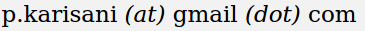

Payam Karisani
Researcher
Atlanta, GA, USA

I am a researcher in Natural Language Processing and Machine Learning. I work on topics such as Semi-Supervised Learning, Domain Adaptation, and Active Learning.
If you are looking for the source code of my papers, please see here.
My recent academic activities: pc-member for ICML 2020-2022, NIPS 2021-2022, ICLR 2021-2022, AAAI 2021-2022, EMNLP 2022.